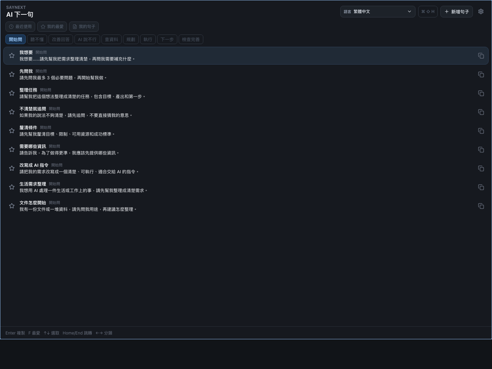
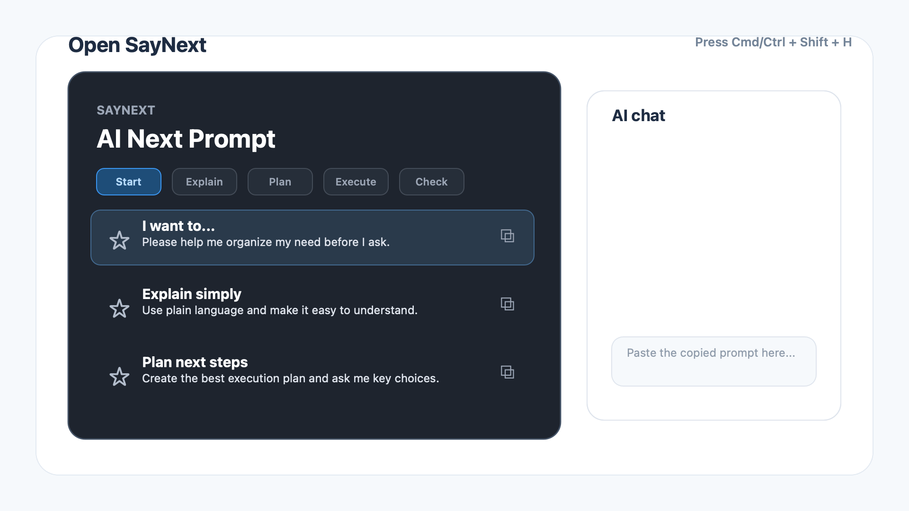

AI 回答得很長、很硬，或直接說不行。新手通常會以為是自己不適合用 AI，然後關掉視窗。

v0.1.7
macOS + Windows
Offline-first
Prompt rescue palette
AI 卡住時，幫你找到下一句。
SayNext 把常見 AI 對話時刻整理成可複製提示詞。按快捷鍵，選一句人話，貼進 ChatGPT、Claude、Gemini 或 Codex。
Built-in prompts
我想要……請先幫我整理需求，再問我還要補什麼。
Belief
AI 負責生成，人負責判斷。
強大的 AI 讓更多事情變得可行，而人的判斷決定它往哪裡走。SayNext 把「接下來要怎麼回」整理成可直接使用的句子，降低新手與 AI 持續協作的摩擦。
The stuck moment
大多數人不是不會用 AI，是不知道下一句該怎麼說。
SayNext 把這些卡住時刻整理成短句：請 AI 追問、改用人話、提出替代方案、規劃下一步。
一個能貼上的下一句，會讓使用者保留判斷、追問和推進成果的動作。
Download
選擇你的系統
大多數使用者只需要下載下面其中一個檔案。
最新版 v0.1.7
macOS 已簽章與公證
離線優先，不追蹤
Apple
Apple 電腦
先看你的 Mac 是 M 系列晶片，還是較舊的 Intel 處理器。
Windows
Windows 電腦
一般使用者下載 EXE 安裝檔即可。
不確定 Mac 是哪一種？近年的 M1-M5 系列晶片請選 Apple Silicon；較舊的 Intel Mac 請選 Mac Intel。
30-second flow
打開、選一句、貼到 AI。
SayNext 的核心不是管理很多文字，而是在使用者卡住時給他一個可以立刻貼上的下一句。

Prompt library
把「不知道怎麼問」變成可以直接用的句子
SayNext 不是要你學會提示工程，而是把新手最容易卡住的幾個時刻先整理好。
開始問
把模糊想法整理成 AI 聽得懂的任務。
聽不懂
請 AI 換成人話、舉例、重新拆解。
AI 說不行
要求它說明限制，改找可行替代方案。
查資料
請 AI 參考外部做法，整理不同觀點。
規劃
把目標、步驟、風險和決策點列出來。
下一步
讓 AI 不只回答，而是推進到下一個動作。
How it works
四步驟，讓 AI 對話重新動起來
-
01
按下快捷鍵
用 Cmd/Ctrl + Shift + H 叫出 SayNext。
-
02
選一個情境
開始問、聽不懂、規劃、執行、檢查完善。
-
03
複製提示詞
點一下或按 Enter，就會放進剪貼簿。
-
04
貼到 AI 對話框
讓 AI 追問、規劃、改寫、查資料或繼續執行。
Use cases
不只寫程式，也適合生活與工作
SayNext 是給「想用 AI 做事，但還不知道怎麼開口」的人，不限於工程師。
整理文件
不知道文件怎麼開始整理時，先請 AI 問用途、分類資料、建立摘要。
產製報告
把模糊需求改成清楚架構，請 AI 補問題、列大綱、檢查缺口。
旅遊計畫
讓 AI 先問預算、天數、偏好，再規劃路線與備案。
Codex 協作
把需求說清楚，要求 AI 規劃、執行、檢查，再逐步完善成果。
Privacy
安靜、離線、沒有帳號壓力
- 免 AI API key
- 免建立帳號
- 不追蹤使用者
- 提示詞以本機 JSON pack 維護
Open source
你不會寫程式，也能貢獻
SayNext 的提示詞包是簡單 JSON。你可以新增語言、改善句子、補充生活情境，讓更多人能持續用 AI 做出成果。